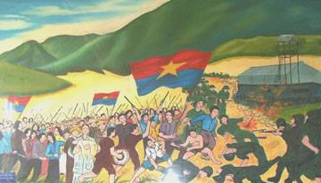
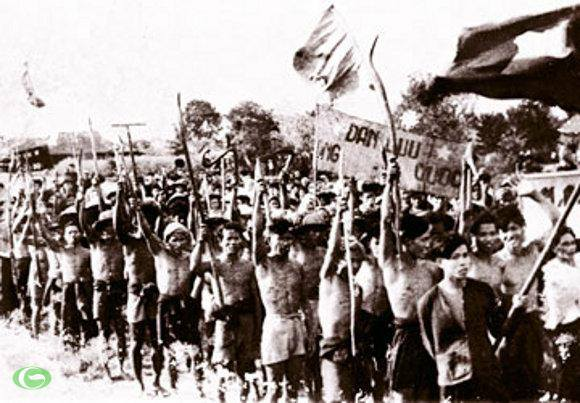

Trong khoảng thời gian Mỹ xâm lược miền Nam Việt Nam, dựng lên chính quyền Ngô Đình Diệm, âm mưu chia cắt lâu dài đất nước ta, biến miền Nam thành thuộc địa kiểu mới và căn cứ quân sự của Mỹ. Thực hiện chính sách “tố cộng”, “diệt cộng”, “luật 10-59”, “cải cách điền địa”, lập “khu dinh điền”, “khu trù mật”…Mỹ Diệm đã kìm kẹp, bóc lột và đàn áp khốc liệt, phong trào cách mạng miền Nam bị tổn thất nặng nề.
Cách mạng miền Nam chuyển từ cuộc đấu tranh vũ trang chống Pháp sang đấu tranh chính trị chống Mỹ Diệm để củng cố hoà bình, giữ gìn lực lượng cách mạng. Phong trào đấu tranh của quần chúng chống “tố cộng”, “diệt cộng”, đòi thi hành Hiệp định Giơnevơ, đòi hoà bình, dân chủ…, đã đi từ đấu tranh chính trị đến kết hợp với đấu tranh vũ trang tự vệ.
Hội nghị lần thứ 15 Ban Chấp hành Trung ương Đảng xác định con đường phát triển cơ bản của cách mạng miền Nam là khởi nghĩa giành chính quyền bằng lực lượng chính trị của quần chúng là chủ yếu, kết hợp với lực lượng vũ trang.
Cũng từ đây phong trào Đồng khởi đã phát triển rộng lớn, tiêu biểu là khởi nghĩa Trà Bồng và nổi dậy ở Bến Tre. Đến năm 1960 ở hàng trăm xã thôn chính quyền địch đã tan rã vì thế chính quyền cách mạng được hình thành.
Qua đó có thể thấy, phong trào Đồng khởi đã đưa tới sự ra đời của Mặt trận dân tộc giải phóng miền Nam Việt Nam vào ngày 20 tháng 1 năm 1960; thành lập Trung ương cục miền Nam, Quân giải phóng miền Nam. Đồng khởi đã làm lung lay chính quyền Ngô Đình Diệm và giáng một đòn nặng nề vào chính sách thực dân kiểu mới của Mỹ.
Chính vì thế, phong trào Đồng khởi đã giúp cách mạng miền Nam từ đấu tranh chính trị giữ gìn lực lượng tiến dần lên đấu tranh chính trị kết hợp với đấu tranh vũ trang, khởi nghĩa giành quyền làm chủ, phát triển thành chiến tranh cách mạng.
Bài viết của Nguyễn Thị Ngọc Thảo
Học sinh lớp 10A2 - Trường THPT Nguyễn Công Trứ